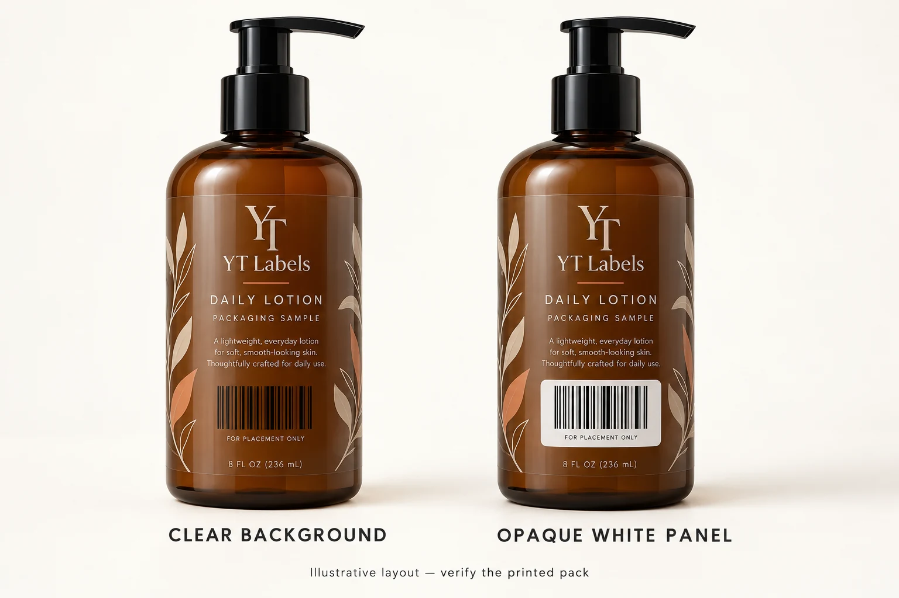

Start with the buyer’s acceptance requirement
Ask the brand or trading partner which barcode type, product identifier and verification evidence the project needs. A retail item, an internal stock label and a shipping case can have different jobs. “Put a barcode here” leaves too much for the artwork operator to guess.
For cosmetics, GS1 US explains that a GTIN identifies a trade item, while an SKU is an internal stock identifier. Its cosmetic guidance also discusses identification at the product-variant level. Keep the brand’s approved identifier-to-product mapping with the artwork. A visually similar label is an easy place to carry yesterday’s code into today’s variant. GS1 US cosmetic product guidance.
Request the approved barcode file and data, the relevant customer specification, and the person responsible for signing off the result. The label supplier can review the print layout; the brand still needs to confirm that the code identifies the intended product.
Give a clear label a deliberate barcode background
An amber bottle can make a transparent label look beautifully restrained. It can also put a dark background behind black barcode bars. The artwork may look crisp against the white page of a PDF while the filled pack presents a different contrast.
GS1 US recommends black bars on a white background as the best combination, and single-color bars rather than building them from several process colors. Where a printed background supplies the opacity, its solid coverage matters. GS1 US placement and printing guidelines.
For a clear-label quote, mark the proposed opaque panel separately from the decorative artwork. Ask the printer to confirm the white-ink treatment and evaluate the result on the actual container. A white rectangle on a screen is an instruction to discuss, not proof of sufficient printed opacity.
The whole label does not have to become white. A local panel can preserve much of the transparent design while giving the barcode a controlled background. Compare the broader appearance choices in our clear cosmetic label guide.

Reserve space on the bottle before shrinking the code
A packaging designer sees a crowded back panel. Procurement sees another artwork revision. Both have a reason to ask whether the barcode could be a little smaller.
Check the available panel first. GS1’s quality checklist identifies symbol size, bar height, contrast, quiet zones and positioning on cylindrical packaging as relevant factors. It also flags wrinkles and packaging that obstructs the code. GS1 barcode quality checklist.
Quiet zones are functional clear margins. A leaf illustration, batch box or label edge should not casually take their place. Have the barcode specialist confirm the required dimensions for the chosen symbol and application rather than borrowing a generic margin from another project.
Use a full-size mockup to discuss placement, then review the printed label on the assembled pack. Pay attention to shoulders, seams and the area that disappears around a tight curve. Our bottle label sizing guide helps prepare the container measurements; it does not establish barcode compliance.
Separate the three approvals
I would keep three lines on the approval sheet:
| Approval | What to record | What remains to be checked |
|---|---|---|
| Artwork review | Approved file version, identifier mapping, intended dimensions and position | Actual printed and applied performance |
| Practical scan check | Device, sample condition and decoded data | Performance under other devices or conditions; formal quality grading |
| Formal verification | Report, sample identity, assessment scope and acceptance decision | Anything the report explicitly leaves unassessed |
A phone or handheld reader decoding a sample is useful feedback. It does not, by itself, measure the symbol’s overall print-quality grade. GS1 describes verification using standards-compliant equipment that measures parameters and provides an overall grade; applicable minimum requirements depend on the application. GS1 guidance on measuring printed barcode quality.
Ask what was actually tested. GS1’s verification workflow distinguishes artwork, incomplete samples and finished products. For transparent material, it specifically favors testing the actual product because what shows through can affect the result. A report based on a loose label deserves a careful scope check before being treated as approval of the filled bottle. GS1 1D verification process guideline.
Match the review effort to the order
Consider two hypothetical buying situations.
A small brand is preparing samples for a presentation. It needs correct product mapping and a sensible label layout, but its next immediate decision may be whether to proceed with a physical proof.
Another brand has a retailer’s written barcode acceptance requirement and a confirmed delivery appointment. For that buyer, arranging the required verification before releasing the full run belongs in the production plan.
Neither situation makes guessing a good bargain. The difference is when the evidence is needed, who requests it and what a rejected pack would interrupt.
Before comparing label quotes, ask suppliers to separate artwork review, physical sampling, any agreed verification service and production. A low print price can still leave an essential acceptance task outside the quote. Equally, do not buy a vaguely described “barcode certificate” without knowing the sample and assessment it covers.
Close the approval loop before production
Keep one release record containing:
- The product name, approved identifier and artwork revision for each version.
- Bottle material, coating, filled appearance and label location.
- Label construction, finish and intended barcode-background treatment.
- The agreed sample stage and evaluation scope.
- Any verification report and the trading partner’s acceptance requirement.
- The named approver, approval date and changes that require another review.
For repeat orders, flag changes to the pack, label construction, finish or barcode artwork for review. Keeping the same product name does not establish that the printed pack is unchanged.
For a cosmetic bottle label project, send YT Labels the bottle photos or sample details, proposed label dimensions, quantity per artwork version, approved barcode artwork and any retailer specification. Use the quote request form to prepare your inquiry; attach the artwork in your email or WhatsApp message when sending it.
A clearly written acceptance brief gives the printer something specific to quote and gives the buyer a release decision they can explain.